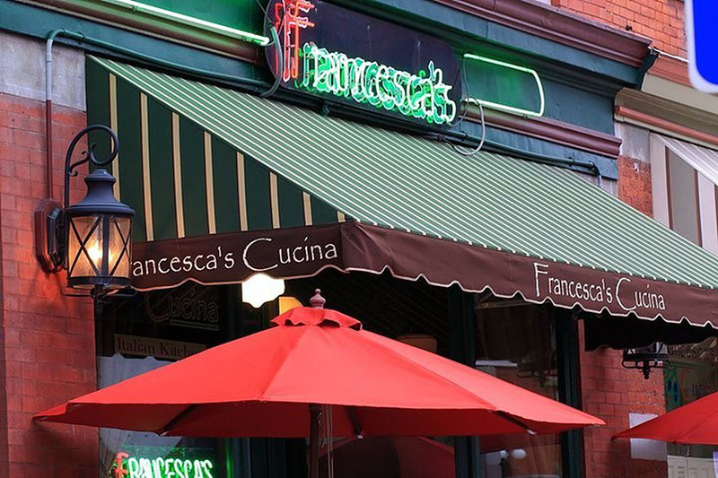
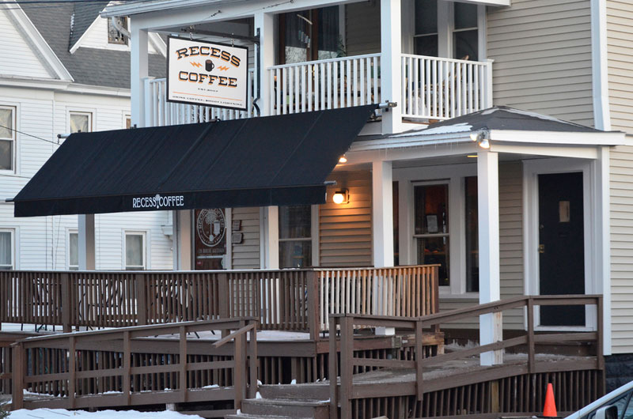
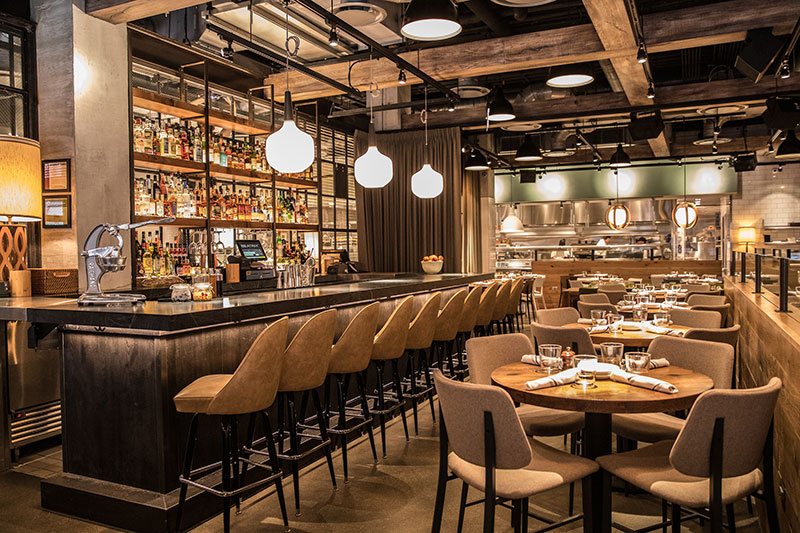
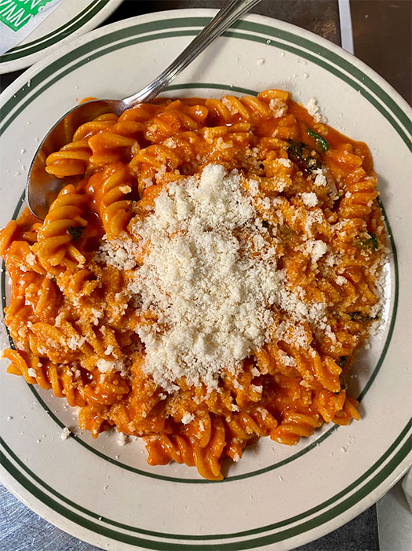
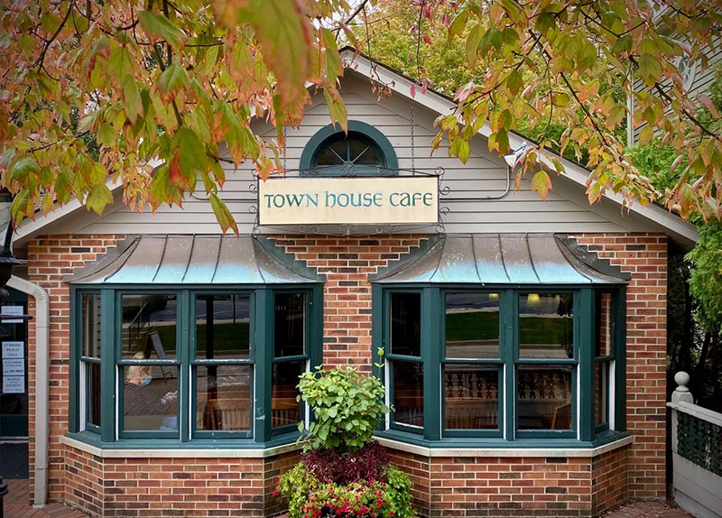
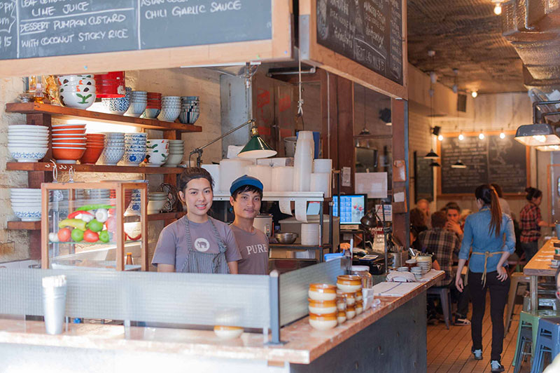
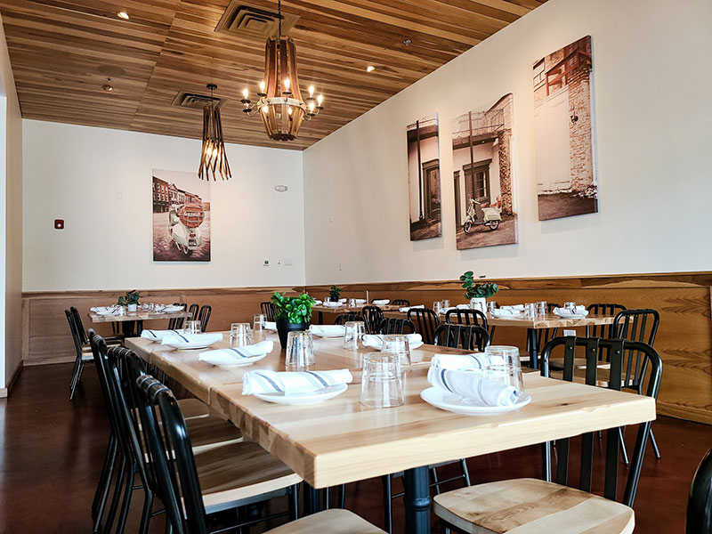
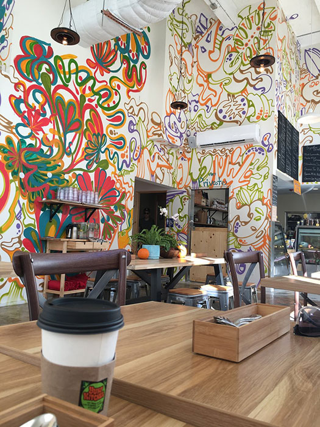
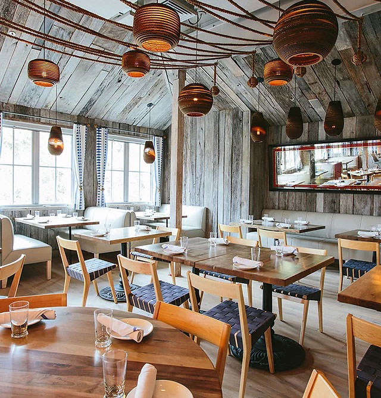

Skip to Content
Francesca's Cucina - Syracuse, NY

- Cuisine – Italian
- Rating – 8/10
- Favorite Dishes – Pumpkin Ravioli (seasonal), Lobster Ravioli
- Website
Recess Coffee

- Coffee Shop
- Rating - 9/10
- Favorite “Dishes” – Classic2 on an everything bagel, Iced Oat milk Latte, Dirty Chai
- Website
Beatrix

- Cuisine – American/Coffee
- Rating – 9/10
- Favorite Dishes – Mushroom Quinoa Burger, Wild Mushroom Teriyaki Bowl, Vegan Chocolate Chip Cookie, Honey-Cinnamon Latte
- Menu
Jon & Vinny's

- Cuisine – Italian
- Rating – 8/10
- Favorite Dishes – Mozzarella Sticks, Spicy Fusilli, Margherita Pizza
- Menu
Town House Cafe

- Cuisine - Light Lunch
- Rating – 9/10
- Favorite Dishes – Mixed Green Salad with Herb Vinaigrette, Vegetable Club Sandwich, Apricot Chicken Sandwich
- Website
Pure Thai Cookhouse

- Cuisine - Thai
- Rating – 8/10
- Favorite Dishes – Fried Rice with Crab Meat, Pad See Ew with Beef
- Website
Gia Mia

- Cuisine – Modern Italian
- Rating – 9/10
- Favorite Dishes – Zucchini Fries, Blackened Salmon & Spinach Salad, Pear & Caramelized Onion Pizza
- Website
Yuko Kitchen

- Cuisine – Japanese
- Rating – 8.5/10
- Favorite Dishes – Spicy Salmon Rice Cake, Chicken Plate
- Menu
Fullmoon Woodfired Pizza

- Pizza truck
- Rating – 9/10
- Favorite Dishes – Cajun Pizza, S’mores Pizza
- Website
The Obstinate Daughter

- Cuisine – Southern
- Rating – 7/10
- Favorite Dishes – Campanelle Pasta, Farro with Chicken, Affogato with Vanilla Gelato
- Menu